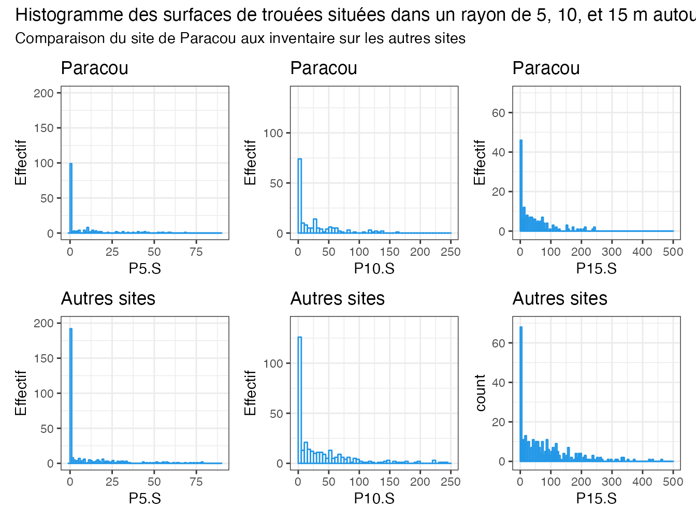
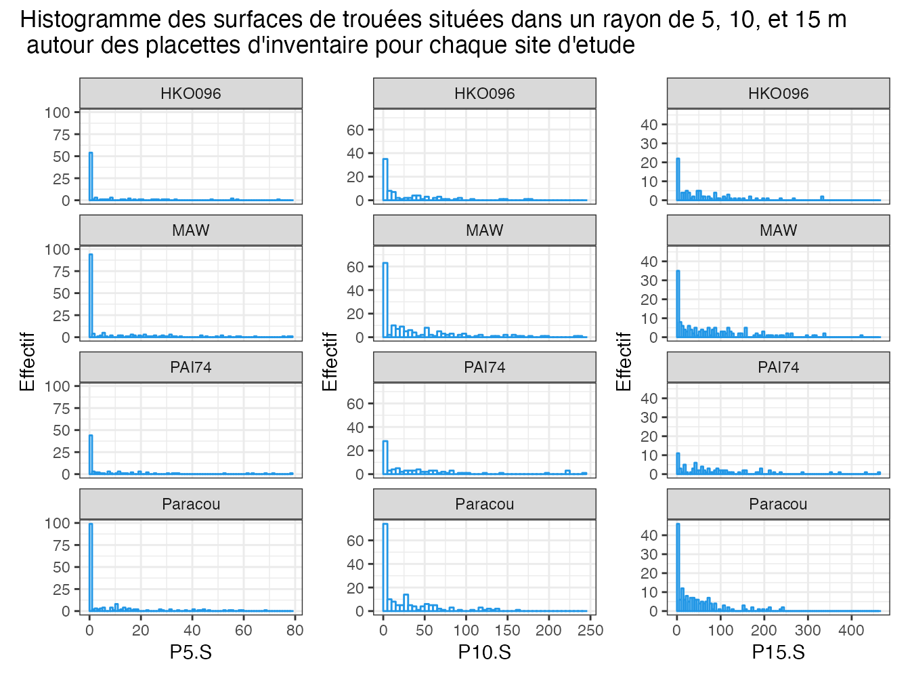

4 Surfaces d’ouverture de la canopee
L’objectif est de comparer les surfaces de trouees intersectées dans un rayon de 5,10 et 15m autour des palcettes entre Paracou et les autres sites d’études, afin de rééquilibrer échantillonnage.
On etudie les 3 varaibles suivantes:
P5.S = surface de trouée localisée dans un rayon de 5m autour du centre de la placette d’inventaire P10.S = surface de trouée localisée dans un rayon de 10m autour du centre de la placette d’inventaire P15.S = surface de trouée localisée dans un rayon de 15m autour du centre de la placette d’inventaire
library(tidyverse)
library(sf)
library(ggplot2)
library(patchwork)
library(units)load("vault/data/ouvertures.RData")
ouvertures_histo <-ouvertures %>%
drop_units() %>% # les surfaces d'intersection avec les trouee ont une unite(m2) ,on la retire pour le moment(probleme d'affichage avec ggplot2)
mutate(Site = case_when(Foret=="Paracou" ~ "Paracou",
Parcelle=="HKO096" ~ "HKO096",
Parcelle=="MAW745" ~ "MAW",
Parcelle=="MAW744" ~ "MAW",
Parcelle=="PAI74" ~ "PAI74"))# variable "Site d'etude" pour les facet_wrap
ouvertures_histo[is.na(ouvertures_histo)] <- 0
sum(is.na(ouvertures_histo))## [1] 39summary(ouvertures_histo)## Nom_Placette Foret Parcelle
## Length:485 Paracou :164 HKO096 : 84
## Class :character Regina :166 MAW744 : 84
## Mode :character St Georges:155 PAI74 : 82
## MAW745 : 71
## 9 : 17
## (Other):108
## NA's : 39
## P5.S P10.S P15.S
## Min. : 0.000 Min. : 0.00 Min. : 0.000
## 1st Qu.: 0.000 1st Qu.: 0.00 1st Qu.: 8.949
## Median : 0.000 Median : 13.29 Median : 42.265
## Mean : 9.069 Mean : 32.60 Mean : 67.756
## 3rd Qu.:11.621 3rd Qu.: 50.22 3rd Qu.: 96.307
## Max. :78.303 Max. :240.27 Max. :461.620
##
## LP10.S LP15.S LG5.S
## Min. : 0.000 Min. : 0.00 Min. : 0.00
## 1st Qu.: 0.000 1st Qu.: 0.00 1st Qu.: 0.00
## Median : 9.909 Median : 14.42 Median :20.05
## Mean : 24.192 Mean : 33.67 Mean :25.69
## 3rd Qu.: 35.814 3rd Qu.: 48.32 3rd Qu.:50.23
## Max. :168.324 Max. :370.24 Max. :73.36
##
## LG10.S LG15.S LG_L10.S
## Min. : 0.00 Min. : 0.0 Min. : 0.00
## 1st Qu.: 19.63 1st Qu.: 96.0 1st Qu.: 13.32
## Median :104.89 Median :224.2 Median : 74.15
## Mean :100.94 Mean :218.8 Mean : 78.08
## 3rd Qu.:167.12 3rd Qu.:338.3 3rd Qu.:123.41
## Max. :272.24 Max. :571.2 Max. :235.28
##
## LG_L15.S Site
## Min. : 0.00 Length:485
## 1st Qu.: 37.08 Class :character
## Median : 92.84 Mode :character
## Mean :109.78
## 3rd Qu.:158.39
## Max. :435.65
## ouvertures_paracou <- ouvertures_histo %>%
filter(Foret=="Paracou")#selection des données de Paracou
ouvertures_autres <- ouvertures_histo %>%
filter(!Foret=="Paracou")#selecction des données hors Paracou4.1 Comparaison de paracou aux autres sites
# Plot comparant Paracou aux autres forets
p1 <- ggplot(data = ouvertures_paracou) + geom_histogram(aes(x = P5.S),
binwidth = 1, boundary = 0, closed = "left", colour = 4,
fill = "white") + ggtitle("Paracou") + ylab("Effectif") +
lims(x = c(-1, 90), y = c(0, 200))
p2 <- ggplot(data = ouvertures_autres) + geom_histogram(aes(x = P5.S),
binwidth = 1, boundary = 0, closed = "left", colour = 4,
fill = "white") + ggtitle("Autres sites") + ylab("Effectif") +
lims(x = c(-1, 90), y = c(0, 200))
p3 <- ggplot(data = ouvertures_paracou) + geom_histogram(aes(x = P10.S),
binwidth = 5, boundary = 0, closed = "left", colour = 4,
fill = "white") + ggtitle("Paracou") + ylab("Effectif") +
lims(x = c(-1, 250), y = c(0, 140))
p5 <- ggplot(data = ouvertures_autres) + geom_histogram(aes(x = P10.S),
binwidth = 5, boundary = 0, closed = "left", colour = 4,
fill = "white") + ggtitle("Autres sites") + ylab("Effectif") +
lims(x = c(-1, 250), y = c(0, 140))
p4 <- ggplot(data = ouvertures_paracou) + geom_histogram(aes(x = P15.S),
binwidth = 5, boundary = 0, closed = "left", colour = 4,
fill = "white") + ggtitle("Paracou") + ylab("Effectif") +
lims(x = c(-1, 500), y = c(-1, 70))
p6 <- ggplot(data = ouvertures_autres) + geom_histogram(aes(x = P15.S),
binwidth = 5, boundary = 0, closed = "left", colour = 4,
fill = "white") + ggtitle("Autres sites") + lims(x = c(-1,
500), y = c(-1, 70))
#--- Plot de Paracou et autres sites mélangés(Regina, St Georges)
(p1/p2 | p3/p5 | p4/p6) + plot_annotation(title = "Histogramme des surfaces de trouées situées dans un rayon de 5, 10, et 15 m autour des placettes d'inventaire",
subtitle = "Comparaison du site de Paracou aux inventaire sur les autres sites")
rq:Les surfaces nulles, dont l’effectif est toujours très grand, écrasent les graphes La largeur des barres des histogrammes est de 1m2 pour P5.S,et de 5m2 pour P10.S et P15.S
Le graphique ci-dessus montre qu’il existe un manque dans les grandes surfaces pour Paracou, ce qui est cohérent car l’exploitation est ancienne, les trouees sont donc de taille réduite. La repartition des ouvertures de moins de 100m dans le rayon de 10m est également différente.
4.2 Comparaison des 4 sites
#--- Plot regroupant chaque site d'étude
p8 <- ggplot(data = ouvertures_histo) + geom_histogram(aes(P5.S),
binwidth = 1, boundary = 0, closed = "left", colour = 4,
fill = "white") + facet_wrap(~Site, ncol = 1) + ylab("Effectif")
p9 <- ggplot(data = ouvertures_histo) + geom_histogram(aes(P10.S),
binwidth = 5, boundary = 0, closed = "left", colour = 4,
fill = "white") + facet_wrap(~Site, ncol = 1) + ylab("Effectif")
p10 <- ggplot(data = ouvertures_histo) + geom_histogram(aes(P15.S),
binwidth = 5, boundary = 0, closed = "left", colour = 4,
fill = "white") + facet_wrap(~Site, ncol = 1) + ylab("Effectif")
p8 + p9 + p10 + plot_annotation(title = "Histogramme des surfaces de trouées situées dans un rayon de 5, 10, et 15 m \n autour des placettes d'inventaire pour chaque site d'etude")